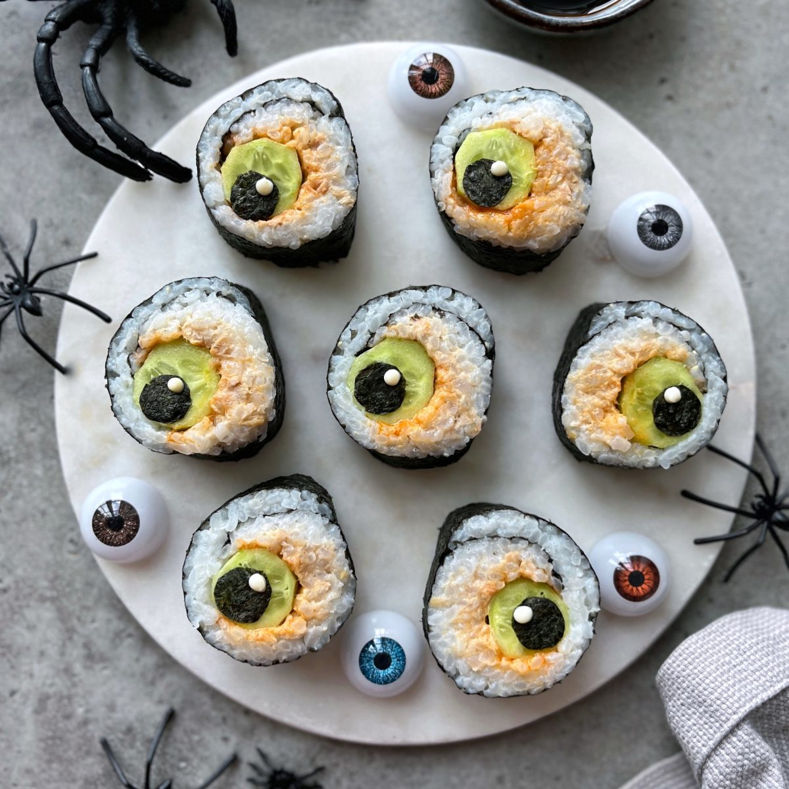

Spooky Ghost Nigiri
How to Make the Eyeball Shape
To create these spooky eyeballs, start by making a classic maki roll filled with spicy tuna or salmon and a thick center core of crisp cucumber. Once the roll is tightly rolled in nori seaweed, slice it crosswise into rounds. To form the eye, place a perfectly circular round slice of cucumber right on top of each sushi piece. Finish the look by placing a small drop of dark spicy sauce or a tiny cutout of nori in the center of the cucumber to act as the pupil, making the sushi look right back at you!
Ingredients
- 2 cups Sushi Rice (cooked and seasoned)
- 4 sheets Nori (seaweed sheets)
- 150g Spicy Tuna or Salmon mix
- 1 English Cucumber (sliced into thick spears for the center, and thin rounds for the eyeballs)
- Spicy Mayo or Sriracha (for the pupil detail)
Instructions
- Spread an even layer of seasoned sushi rice over a sheet of nori wrapper.
- Place your spicy tuna mix and a thick cucumber spear across the center of the rice.
- Roll tightly using a bamboo mat, then slice the roll into even, bite-sized rounds.
- Top each individual slice with a thin, circular cut of cucumber to form the eyeball base.
- Dot the center of each cucumber round with a small drop of dark sauce to complete the pupil.